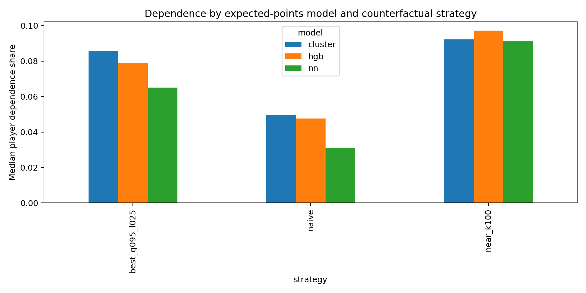
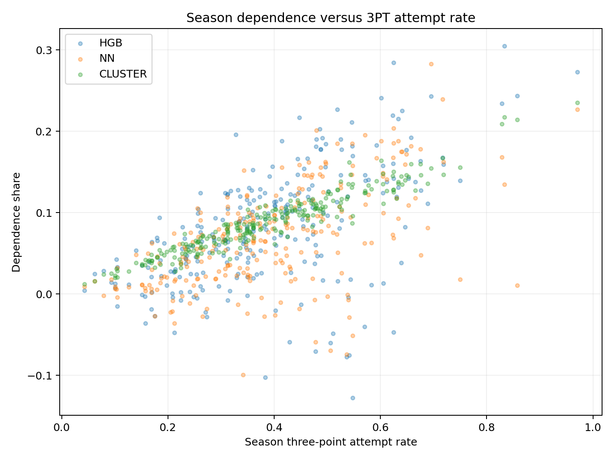

Model-Based Counterfactual Dependence
This report compares how three final expected-points models value observed three-point shots relative to feasible two-point alternatives. It includes players with at least 20 season three-point attempts and uses all of each selected player’s retained shots.
Research Question and Interpretation
For each observed three-point attempt, how much expected-points value does the selected model assign to that shot compared with a specified two-point alternative? The resulting dependence measure describes the model-based value of the three-point choice under the stated replacement rule. It is not an observed causal effect and does not establish what a player would actually have done after relocating.
For an observed shot, expected points equal its predicted make probability multiplied by its point value. The counterfactual is scored as a two-point attempt. Two-point shots contribute zero difference. Positive dependence means the model values the observed three above its selected two-point alternative; negative values are possible when the alternative scores higher.
Models and Held-Out Test Prediction Performance
18-Bucket HGB estimates make probability using the 18 location/defensive-pressure buckets. Unified MLP is the combined 2PT/3PT neural network. 12-Cluster estimates make probability from similar shots within the fitted shot-location cluster.
| Model | Test shots | Accuracy | ROC AUC | Log loss | Brier score | ECE |
|---|---|---|---|---|---|---|
| 18-Bucket HGB | 17,740 | 0.6242 | 0.6479 | 0.6422 | 0.2262 | 0.0155 |
| Unified MLP | 17,740 | 0.6093 | 0.6134 | 0.6880 | 0.2409 | 0.0668 |
| 12-Cluster | 17,740 | 0.6196 | 0.6272 | 0.6524 | 0.2305 | 0.0061 |
These classification metrics describe the underlying make-probability models. Dependence results below answer a different question and should not be interpreted as a model-performance ranking.
Counterfactual Strategies
- Naive 2PT baseline: replace each three with that player’s full-season mean expected points on two-point shots; use the season league mean when that player has no two-point attempts.
- Nearest feasible 2PT: search two-point grid locations within 8 feet of the shooter, at 0.25-foot spacing, and retain candidates whose closest-defender distance is at least the original distance. Select the closest qualifying location. When none qualifies, use the naive baseline.
- Best feasible 2PT: score the same candidate grid after applying a 0.25 feet-per-feet defensive-closing penalty, then choose the candidate nearest the 95th percentile of candidate make probabilities.
Observed probabilities come from the stored predictions for each of the three models. Train is the reference set for local counterfactual probability surfaces. The naive player 2PT baseline uses the player’s expected 2PT value from all retained season shots. All Train and Test shots for qualified players contribute to dependence aggregates.
Player-Level Dependence
The table reports the mean and median dependence share for players with at least 20 season 3PT attempts. All of each qualified player’s retained 2PT and 3PT shots contribute to their dependence estimate. The complete player-level file includes shot counts and bootstrap intervals.
| Model | Counterfactual strategy | Median share | Mean share | Median 95% CI width |
|---|---|---|---|---|
| HGB | Naive | 4.76% | 5.30% | 3.57% |
| HGB | Nearest feasible | 9.73% | 10.07% | 4.26% |
| HGB | Best feasible | 7.90% | 8.11% | 4.25% |
| MLP | Naive | 3.11% | 4.19% | 4.44% |
| MLP | Nearest feasible | 9.12% | 9.90% | 4.93% |
| MLP | Best feasible | 6.51% | 6.90% | 4.88% |
| 12-Cluster | Naive | 4.97% | 4.97% | 2.49% |
| 12-Cluster | Nearest feasible | 9.22% | 9.45% | 3.39% |
| 12-Cluster | Best feasible | 8.58% | 8.86% | 3.35% |

Figure 1. Median player dependence share for the 20+ 3PA cohort across the three models and counterfactual strategies.
Descriptive extremes under the best-feasible strategy
These are the highest and lowest dependence shares among qualified players, with season attempt counts shown.
| Model | Highest share | Share | Season 3PA | Lowest share | Share | Season 3PA |
|---|---|---|---|---|---|---|
| HGB | Damjan Rudez | 30.46% | 25 | Brandon Jennings | −12.77% | 23 |
| MLP | Channing Frye | 28.25% | 89 | Jared Cunningham | −9.96% | 27 |
| 12-Cluster | Mike Miller | 23.54% | 33 | Dwyane Wade | 1.21% | 21 |
Team-Level Results
Team-level dependence is calculated from all retained shots taken by the qualified player cohort. The table below gives the mean and median team share by model and strategy; the complete CSV includes each team’s totals, attempt counts, and bootstrap intervals.
| Model | Strategy | Median team share | Mean team share |
|---|---|---|---|
| HGB | Naive | 4.99% | 4.83% |
| HGB | Nearest feasible | 9.79% | 9.63% |
| HGB | Best feasible | 7.93% | 7.99% |
| MLP | Naive | 3.68% | 3.54% |
| MLP | Nearest feasible | 9.69% | 9.44% |
| MLP | Best feasible | 7.07% | 6.97% |
| 12-Cluster | Naive | 4.27% | 4.39% |
| 12-Cluster | Nearest feasible | 8.57% | 8.50% |
| 12-Cluster | Best feasible | 7.85% | 7.90% |
Dependence and Three-Point Attempt Rate
Each point represents a player under one model using the best-feasible counterfactual. The plot helps show how dependence estimates vary with season 3PT attempt rate; it does not isolate a causal effect of attempt frequency.

Figure 2. Player dependence share versus full-season 3PT attempt rate among players with at least 20 attempts.
Files and Reproducibility
The complete tables and settings are available alongside the report. Player-level outputs include only players with at least 20 season 3PT attempts; each selected player’s full retained season of shots is included:
Model/strategy summary All player results All team results Shot-level results Counterfactual diagnostics Test model metrics Analysis settings
The analysis script is src/experiments/model_based_dependence.py. Open this report by double-clicking dependence_report.html in the repository folder. Keep the report, plots/, and results/ together so its figures and data links resolve.
Conclusion
Across all three models, the nearest-feasible and best-feasible alternatives produce larger average player dependence shares than the naive player 2PT baseline. The magnitude and player ordering vary by model, with the 12-cluster model showing the highest average player dependence share under the best-feasible strategy.